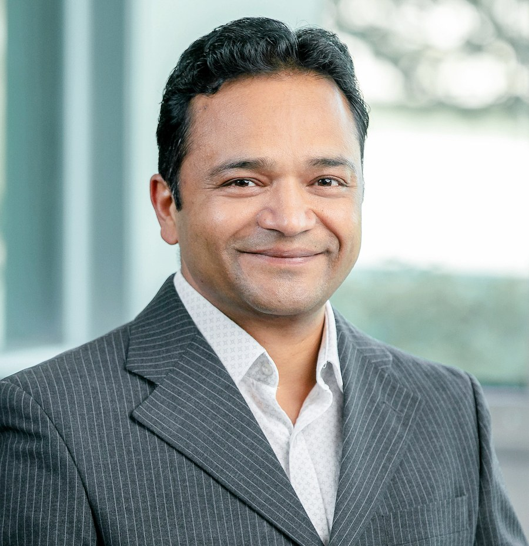

Enterprise Digital Transformation
Discuss transformation expertise ↗Transformation strategy, operating models, governance, roadmaps and execution for complex global enterprises.
DIGITAL TRANSFORMATION · ENTERPRISE AI · ARCHITECTURE
I am Sachin Gupta, a Digital Transformation Architect with 20+ years of global experience leading enterprise-wide transformation, ERP modernization, enterprise architecture, AI/ML initiatives and technology-enabled supply-chain transformation.
My work connects business strategy, operating models, architecture, platforms, data and delivery to modernize mission-critical enterprises while maintaining business continuity. I focus on practical enterprise AI, legacy-to-modern transformation, resilient digital operations and measurable business outcomes.

ABOUT
I work at the intersection of enterprise strategy, architecture, business operations and technology delivery. My experience spans global ERP transformation, application modernization, enterprise architecture, supply-chain digitization and complex legacy-to-modern platform transitions.
My focus is solving transformation problems between technology and business continuity: fragmented platforms, regional variation, critical capabilities, data and integration dependencies, and the need to modernize while the enterprise keeps operating.
I am increasingly focused on AI/ML for enterprise operations identifying practical opportunities where AI can improve decisions, automate repeatable work, accelerate response times and strengthen operational intelligence while maintaining governance and human oversight.
EXPERTISE
Transformation strategy, operating models, governance, roadmaps and execution for complex global enterprises.
Business, application, data and technology architecture aligned to enterprise capabilities and strategic outcomes.
Practical AI/ML opportunities for decision intelligence, workflow automation, customer response, analytics and operational productivity.
Legacy-to-modern ERP transformation, coexistence architecture, integration, cutover strategy and business continuity.
Digital capabilities supporting inventory, order management, planning, fulfillment, visibility and resilience.
Modernizing fragmented technology estates while preserving critical regional, brand and operational capabilities.
AI / ML · OPPORTUNITIES
I am interested in opportunities where enterprise AI intersects with real operating problems not AI for its own sake.
Identifying high-value AI opportunities, operating models, governance, architecture and responsible enterprise adoption.
Discuss an opportunity ↗Open to research collaboration, peer review, judging, speaking, panels, interviews and practitioner thought leadership in applied enterprise AI.
Invite me to contribute ↗Applying AI/ML to decision intelligence, automation, data-driven operations, enterprise workflows and supply-chain resilience.
Discuss a use case ↗SELECTED IMPACT
A key area of my work is designing scalable coexistence approaches where regional legacy environments transition toward a modern ERP ecosystem while business entities already operating on the modern platform continue to run.
Selected examples are intentionally high-level to respect employer confidentiality and intellectual property.
RESEARCH & PUBLICATIONS
A framework-oriented study of how enterprises can manage legacy and modern ERP environments during multi-region transformation while protecting business continuity, regional capabilities and supply-chain resilience.
Exploring how AI/ML can move from isolated use cases toward repeatable enterprise decision-intelligence capabilities.
Governance, architecture, operating-model design and transformation sequencing in complex enterprises.
Accepted article addressing edge-cloud orchestration and resilient multimodal disaster triage under constrained connectivity.
Research should be useful to practitioners and scholars: grounded in real transformation challenges, structured as reusable frameworks and supported by evidence wherever confidentiality permits.
PROFESSIONAL CONTRIBUTIONS
Professional engagement across engineering, technology, digital transformation and related communities.
Professional engagement in enterprise architecture, digital transformation and architecture practice.
Serving as a judge for the 2026 Los Angeles event, evaluating participant solutions developed using NASA and partner open data to address real-world challenges.
Contributing industry perspective to academic and emerging-technology discussions.
RECOGNITION & DEVELOPMENT
Mahindra Bristlecone recognition for delivery excellence.
Recognition for process optimization and continuous improvement.
Recognition for successful regional rollout leadership.
Recognition for facilitating technology and management-focused events.
CERTIFICATIONS & DEVELOPMENT
MEMBERSHIPS
INSIGHTS
Effective AI adoption starts by identifying high-value decisions and workflows, then selecting the right technology and governance.
The platform changes, but sustainable transformation depends on capabilities, governance, data, integration and adoption.
Data quality, human oversight, security, accountability and measurable outcomes should be considered before AI becomes mission-critical.
CONNECT
I am open to professional conversations, AI opportunities, research collaboration, industry events, peer review, judging, mentoring, advisory work and thought-leadership opportunities aligned with my expertise.